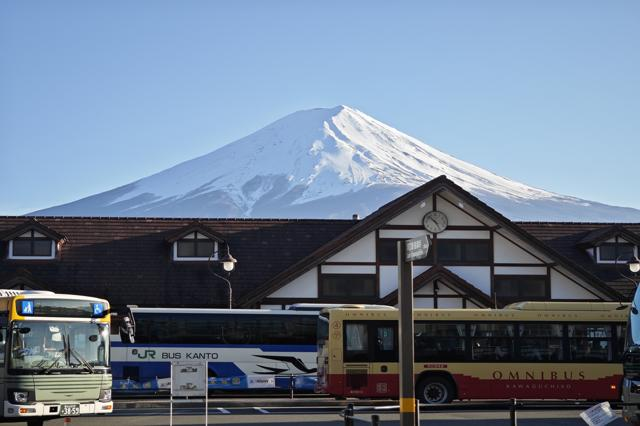
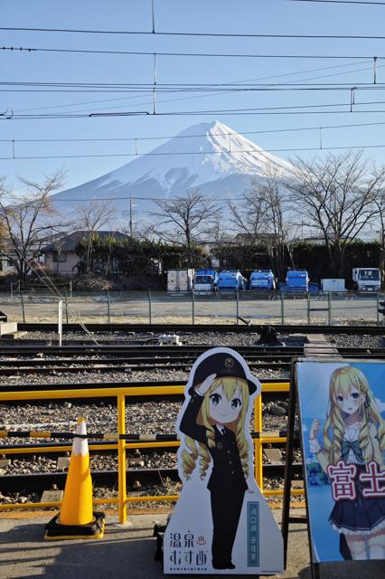
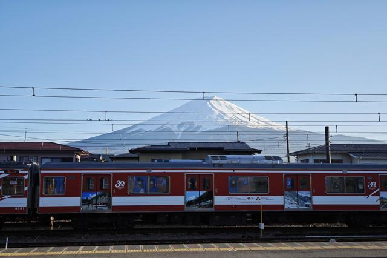
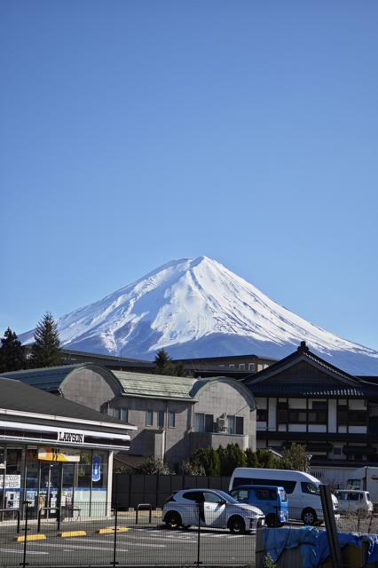
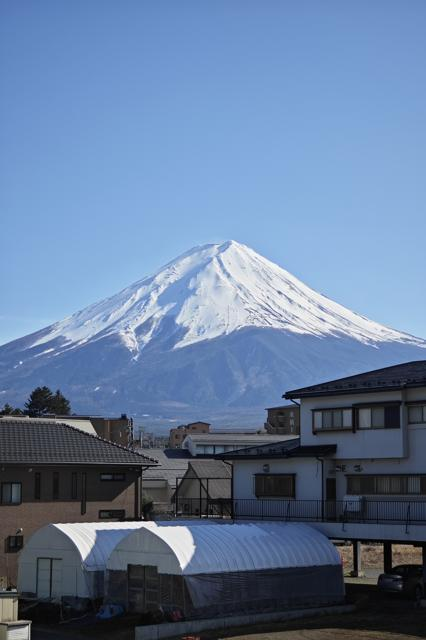
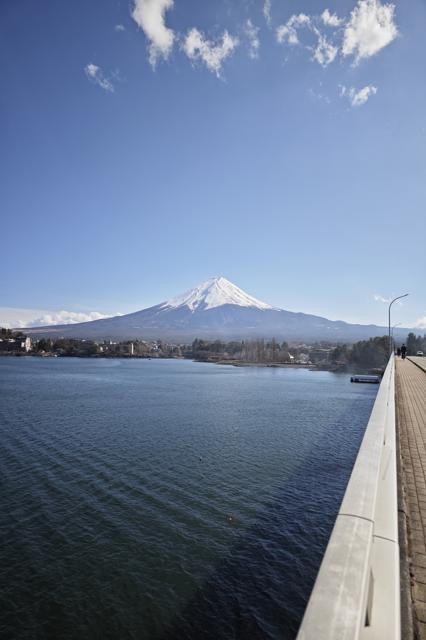
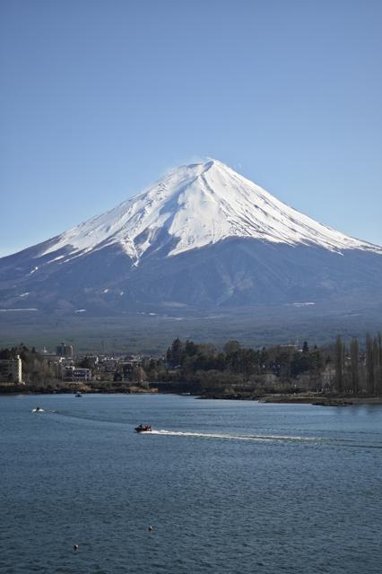
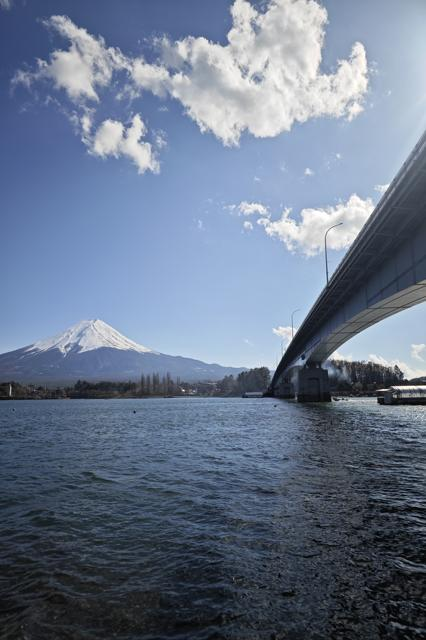
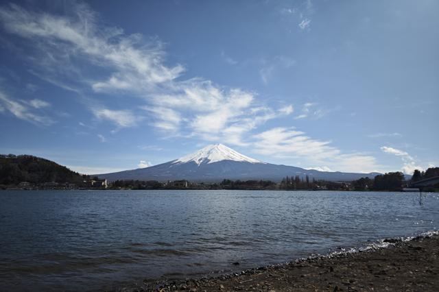
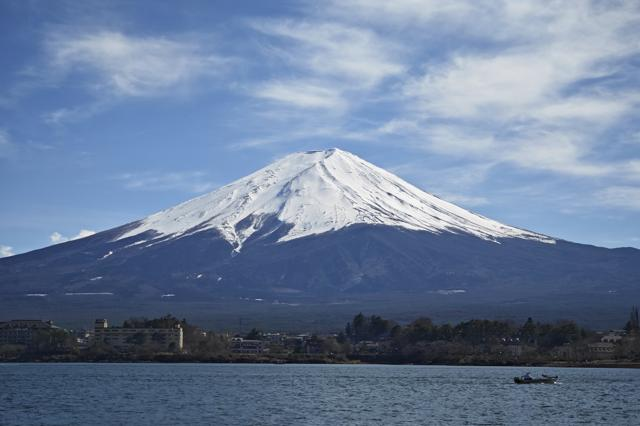

ล่าสุดในประเทศญี่ปุ่น รัฐบาลท้องถิ่นของคาวากุชิโกะได้ตัดสินใจที่ก่อให้เกิดการสนทนาอย่างมาก พวกเขาตัดสินใจที่จะสร้างรั้วกั้นเพื่อบดบังทัศนียภาพของภูเขาไฟฟูจิอันเป็นสัญลักษณ์ที่จุดถ่ายรูปยอดนิยมหน้าร้าน Lawson การตัดสินใจนี้ไม่ได้ทำอย่างรวดเร็ว มันเป็นการตอบสนองต่อการแห่เข้ามาของนักท่องเที่ยวจำนวนมหาศาลที่ด้วยความกระตือรือร้นของพวกเขาบ่อยครั้งก่อให้เกิดปัญหาเช่นมลพิษทางเสียงและการละเมิดกฎจราจร จุดนี้ที่เคยเป็นสัญลักษณ์แห่งความงามอันสงบได้กลายเป็นแหล่งความขัดแย้งระหว่างชาวบ้านที่อาศัยอยู่ในคาวากุชิโกะและนักท่องเที่ยวที่มาเยือน
อย่างไรก็ตาม หากคุณกังวลว่าจะพลาดความงดงามของคาวากุชิโกะและภูเขาไฟฟูจิ อย่ากลัว มีจุดถ่ายรูปทางเลือกมากมายที่มีวิวทิวทัศน์ที่น่าหลงใหลไม่แพ้กัน
สถานีคาวากุชิโกะ
สถานีรถไฟหลักของคาวากุชิโกะมากกว่าเป็นเพียงจุดขนส่ง ด้านหน้าสถานีคุณจะพบจุดถ่ายรูปที่ยอดเยี่ยมซึ่งผสมผสานพลังงานของสถานีที่คึกคักกับความงดงามอันสงบของภูเขาไฟฟูจิในระยะไกล ความตัดกันระหว่างสถาปัตยกรรมสมัยใหม่และสิ่งมหัศจรรย์ทางธรรมชาติอันยั่งยืนสร้างองค์ประกอบที่ไม่ซ้ำใครซึ่งจับประเด็นแก่นแท้ของคาวากุชิโกะ

แม้หลังจากผ่านเครื่องตรวจตั๋วที่สถานีคาวากุชิโกะแล้ว คุณก็ยังพบจุดถ่ายรูปอีกแห่งที่มองเห็นภูเขาไฟฟูจิในมุมมองที่แตกต่าง จุดนี้ช่วยให้คุณสามารถรวมสถาปัตยกรรมเฉพาะตัวของสถานีเข้าไปในเฟรมของคุณ สร้างองค์ประกอบที่มีพลวัตและน่าสนใจในทางภาพถ่ายที่ผสมผสานองค์ประกอบที่มนุษย์สร้างขึ้นและธรรมชาติอย่างกลมกลืน

และอย่าลืมชานชาลารถไฟด้วย ในขณะที่คุณรอรถไฟ คุณสามารถถ่ายภาพวิวภูเขาไฟฟูจิที่ไม่มีสิ่งกีดขวางได้ ทำให้ชานชาลาเป็นจุดที่ดีสำหรับนักถ่ายภาพธรรมชาติ ชานชาลาให้มุมมองที่ไม่ซ้ำใคร ช่วยให้คุณจับภาพความยิ่งใหญ่ของภูเขาได้อย่างเต็มที่ โดยมีสิ่งก่อสร้างของสถานีเป็นกรอบ

ลอว์สันทางทิศเหนือตะวันตก
ห่างจากสถานีรถไฟหลักไฟเล็กน้อยทางทิศเหนือตะวันตก ไม่ไกลจากทะเลสาบ มีร้านลอว์สันอีกแห่งหนึ่ง ลอว์สันแห่งนี้มีผู้คนไม่พลุกพล่านมากนักและมีวิวที่สวยงามของภูเขาไฟฟูจิ ทะเลสาบที่สงบเงียบและภูเขาที่สูงสง่าสร้างภาพที่สมบูรณ์แบบ

ถนนสาย 707
หากคุณเดินไปตามถนนสาย 707 คุณจะพบจุดถ่ายรูปที่ดี ถนนสายนี้ที่มีร้านค้าและร้านอาหารของชาวบ้านเรียงรายอยู่ มอบวิวที่ไม่ซ้ำใครของชีวิตในเมืองและความงดงามตามธรรมชาติ ทัศนียภาพของภูเขาไฟฟูจิจากจุดนี้แท้จริงแล้วเป็นสิ่งที่ไม่ซ้ำใคร

สะพานใหญ่ทะเลสาบคาวากุชิ
สะพานใหญ่ทะเลสาบคาวากุชิเป็นอีกหนึ่งจุดที่ยอดเยี่ยมในการจับภาพความยิ่งใหญ่ของภูเขาไฟฟูจิ จากจุดนี้บนสะพาน คุณจะได้สัมผัสวิวพาโนรามาของทะเลสาบและภูเขาในระยะไกล ความตัดกันระหว่างสิ่งก่อสร้างของมนุษย์และทัศนียภาพตามธรรมชาติสร้างภาพที่งดงามซึ่งเน้นการอยู่ร่วมกันอย่างกลมกลืนของศิลปะของมนุษย์และความงามของธรรมชาติ

หากคุณต้องการจับภาพรายละเอียดของภูเขาไฟฟูจิ คุณสามารถซูมเข้าไปและโฟกัสที่ภูเขาเอง ยอดเขาที่ปกคลุมด้วยหิมะ เนื้อผิวที่ขรุขระของไหล่เขา และฐานป่าที่ได้รับการเปิดเผยอย่างชัดเจน เผยให้เห็นถึงความงดงามอันน่าทึ่งของสิ่งมหัศจรรย์ทางธรรมชาติแห่งนี้

สำหรับมุมมองที่แตกต่าง คุณสามารถเดินลงมาจากสะพานและถ่ายรูปใกล้ๆ ริมทะเลสาบ จากจุดนี้ คุณจะสามารถจับภาพสะพานเองได้ โดยมีภูเขาไฟฟูจิเป็นฉากหลังอันยิ่งใหญ่ การสะท้อนของสะพานและภูเขาบนผิวน้ำของทะเลสาบเพิ่มมนต์เสน่ห์อันวิเศษให้กับภาพ สร้างภาพที่น่าจดจำ

ทะเลสาบคาวากุชิ
จุดถ่ายรูปที่เป็นที่โปรดส่วนตัวของฉันคือบริเวณริมทะเลสาบคาวากุชิ ทางด้านตรงข้ามจากเมืองคาวากุชิโกะ ที่นี่คุณจะได้สัมผัสวิวอันน่าทึ่งของภูเขาไฟฟูจิ น้ำทะเลสาบที่สงบเงียบ ความเขียวชอุ่มของพื้นที่โดยรอบ และภูเขาอันยิ่งใหญ่ในฉากหลังสร้างภาพวิวที่สมบูรณ์แบบ จุดนี้มีบรรยากาศที่สงบและเงียบสงบ ช่วยให้คุณจมดิ่งลงในความยิ่งใหญ่ของสภาพแวดล้อมได้อย่างเต็มที่

และเมื่อคุณซูมเข้าไปที่ภูเขาไฟฟูจิจากจุดนี้ คุณจะได้ชื่นชมรายละเอียดอันประณีตที่ทำให้ภูเขาแห่งนี้น่าหลงใหล เนื้อผิวที่ขรุขระของไหล่เขา ยอดเขาที่ปกคลุมด้วยหิมะสะท้อนแสงอาทิตย์ และเมฆหมอกบางๆ ที่ลอยรอบๆ สร้างทัศนียภาพที่น่าหลงใหล ซึ่งแน่นอนว่าจะทิ้งความประทับใจอย่างยิ่งกับนักถ่ายภาพหรือผู้รักธรรมชาติทุกคน

ในขณะที่เราสำรวจและสนุกกับจุดชมวิวที่น่าทึ่งเหล่านี้ สิ่งสำคัญคือเราต้องเคารพชุมชนท้องถิ่นและปฏิบัติตามกฎระเบียบที่กำหนดโดยหน่วยงานที่เกี่ยวข้อง ให้แน่ใจว่าความเพลิดเพลินและการชื่นชมในความงามของธรรมชาติของเราไม่ได้ก่อให้เกิดความรบกวนต่อสันติสุขของผู้อื่น ด้วยการเป็นนักท่องเที่ยวที่มีความรับผิดชอบและใส่ใจ เราจะสามารถช่วยอนุรักษ์ความงดงามของคาวากุชิโกะไว้สำหรับอนุชนรุ่นต่อไป สนุกกับการถ่ายภาพนะ และขอให้การเดินทางของคุณเต็มไปด้วยช่วงเวลาที่น่าจดจำและวิวทิวทัศน์ที่น่าทึ่ง!